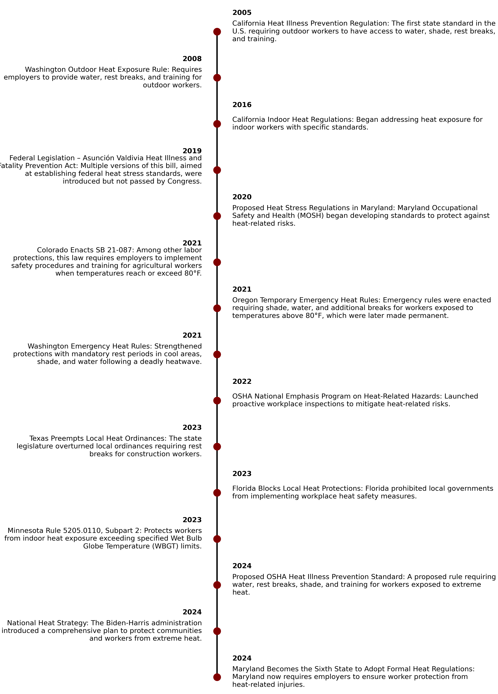

What Lies Ahead for Latino Workers? Extreme Heat, Empty Promises and Political Uncertainty
As heat-related deaths rise in the U.S., Latino workers face deadly conditions without sufficient protections.
By Yunior Rivas Garcia
NEW YORK - On a sweltering summer day in 2023, Esvin Cruz Mateo stumbled as he unloaded heavy boxes from a truck at a warehouse in Bushwick, New York. The heat was oppressive, and as the day dragged on, his breathing quickened, his movements became clumsier, and his vision blurred. When his coworkers saw him collapse, they rushed to his side.
But there was nothing they could do.
“We could tell something was wrong when he stopped moving, but within minutes, he was gone,” said Bladimir Najera, a former coworker of Esvin. “We tried to help him, but it was too late.”
Cruz Mateo was just 24 years old and had arrived in the U.S. from Guatemala less than a year earlier.
With no close relatives in the country, he was taken to a nearby hospital, where he was pronounced dead.
According to investigations by the Occupational Safety and Health Administration (OSHA), the federal agency responsible for workplace safety, Esvin died of multi-organ failure, with extreme heat exposure and carbon monoxide from truck fumes cited as contributing factors. His body was sent back to Guatemala, where it was received by his mother, Paulina Mateo, and the people of their hometown, Jalapa.
“They sent him back in a box. I never got to say goodbye to him, never got to see him one last time,” said Paulina Mateo, tears streaming down her face as she recalled the moment she received the news. “All I want to know is why they let this happen. Why didn’t they protect him?”
The investigation into her son’s death remains “open.”
Latino workers in the U.S., like Cruz Mateo, face a growing risk of heat stress, especially in essential sectors like construction, agriculture, and warehousing. While Latinos make up only 17% of the U.S. workforce, they have accounted for one-third of all workplace heat-related deaths since 2010, according to data from the Bureau of Labor Statistics (BLS). Yet labor protections remain inadequate.
The latest Census of Fatal Occupational Injuries (published in 2024) revealed that Latino workers represented 24%, nearly one-quarter, of all workplace fatalities, with construction and material transportation ranking among the deadliest occupations. These industries regularly expose workers to extreme heat, and many of these workers are undocumented, limiting their ability to demand better workplace protections.
Heat-related fatalities rose by 19.4% between 2021 and 2022 alone.


According to OSHA, the annual average of heat-related deaths has been 38 over the past decade, but the frequency of extreme weather events has driven this number up in recent years.
This issue is not limited to the warmest parts of the country. An analysis by Climate Central, a nonprofit organization studying the impacts of climate change, found that the number of days with dangerous heat indices (above 80°F) has increased in nearly 90% of major U.S. cities since 1979. These conditions are also affecting industries like transportation, manufacturing, and services, where working conditions can be equally hazardous.
The lack of adequate protections, such as regular breaks, access to drinking water, and acclimatization programs, has turned this situation into a national crisis.
Map of Work-Related Heat Incidents in the U.S.
Click to learn more about each incident.
Source: 'OSHA Investigation Summaries', Graphic: Yunior Rivas Garcia
“When the body can’t release enough heat, it starts to fail internally. Organs aren’t designed to withstand elevated internal temperatures for extended periods,” said Dr. Thomas Bernard, a professor at the University of South Florida College of Public Health and an expert in heat stress. He emphasized that heat-related deaths are entirely preventable if employers take basic measures. “We’re not talking about expensive technologies or impossible interventions. We’re talking about access to water, regular breaks, and shade."
While Bernard underscores the unnecessary risks workers face, he also urges workers to practice “self-awareness” and “self-protection.” Workers need to recognize the early signs of heat stress and listen to their bodies. If they feel exhaustion or dizziness, it’s crucial to take a break and hydrate before the situation worsens.
Though that’s often easier said than done.
Do you know how to help prevent heat stress in the workplace?
This interactive quiz will test your knowledge about preventing heat stress in the workplace. Make sure to read the explanation for each answer from the resources at the end of the quiz. Good luck!
Disclaimer: This interactive quiz is for educational purposes only. It is not medical or legal advice.In recent years, several state and institutional efforts have been made to address workplace heat stress risks. In August 2024, New York State issued guidelines for employers, highlighting the importance of preventative measures such as emergency response plans and records of heat-related incidents.
Although not specifically climate-focused, New York also passed “Carlos’ Law” in 2023, increasing penalties for negligent contractors whose lack of safety measures leads to serious injuries or worker deaths. The law, named after a 22-year-old Latino construction worker who died on the job, marks a step toward greater accountability in workplace safety.
Other states, such as California and Colorado, have implemented specific heat stress regulations to protect workers.
However, these efforts remain a patchwork of policies that vary from state to state and lack strict enforcement. As of 2024, only six states have specific heat protection standards, while others, like Texas and Florida, two states with some of the highest numbers of workplace heat-related deaths, have actively blocked local measures designed to protect workers from extreme heat.
Timeline of Heat-Related Regulations in the U.S. 
Experts and labor rights advocates warn that without federal regulations or stricter enforcement, workers remain at risk of deadly conditions.
“These deaths are not accidents; they are the direct result of policies that prioritize profit over human lives,” said Pablo Alvarado, co-director of the National Day Laborer Organizing Network (NDLON), a California-based nonprofit advocating for the rights of day laborers, many of whom are Latino and/or immigrants.
Alvarado does not hide his frustration with what he calls the “systematic neglect” of the most vulnerable workers.
“We’ve seen progress in places like California, where heat protections have saved lives,” Alvarado said. “These standards show it’s possible to ensure safer working conditions, even in demanding industries like agriculture or construction. But we can’t stop there.”
As of 2024, OSHA lacks a federal standard for heat stress. Its only tool is the "General Duty Clause," which is reactive and can only be applied after an incident, such as a worker injury or death, has occurred.
Under President Joe Biden’s administration, OSHA implemented some measures to address this issue, including the creation of a National Emphasis Program (NEP) on heat in 2022, targeting high-risk industries and allowing for preventive inspections during extreme heat advisories. The administration also proposed regulations requiring employers to provide measures like water and cooling areas to protect workers from extreme heat.
These protections were designed to safeguard approximately 36 million workers from heat-related health risks, particularly in sectors with physically demanding jobs and consistently high temperatures. However, the proposed regulations have yet to be approved and remain subject to the slow and politically vulnerable federal administrative process.
Indeed, labor safety advocates fear that Donald Trump’s return to the White House could halt or dismantle these efforts entirely. During his previous administration, Trump rolled back numerous health and safety regulations, and his Republican allies have criticized OSHA’s proposed heat rules as impractical for outdoor work.
This rollback could endanger the lives of millions of workers vulnerable to extreme heat conditions, particularly in states lacking robust local protections.
“We’ve already lived through the erosion of labor protections under his previous administration,” warned Jordan Barad, a former OSHA deputy director and workplace safety expert. “We’ll see more preventable deaths, and Latino and migrant workers will bear the brunt of that suffering.”
When asked about the current state of federal regulations and experts' concerns, OSHA issued a statement acknowledging the severity of the problem.
“Protecting workers from extreme heat remains a priority for OSHA,” said agency spokesperson Patrick Malone in a statement. “We are committed to implementing measures that save lives, including proposing a federal standard and raising awareness about heat stress in high-risk industries.”
Still, without concrete legislation and strict enforcement, administrative promises remain just that, promises.
“[Esvin] came here to work hard and help his family. But in this country, it feels like our lives don’t matter,” said Najera, Esvin’s former coworker. “No one thinks about us until someone dies.”
Cruz Mateo’s case and the stories of thousands of other workers, whose names we may never know, make it clear that extreme heat is not just a logistical issue, it’s a labor justice issue.
As politicians continue to debate productivity versus workplace safety, for millions of Latino workers in the United States, time is already running out.